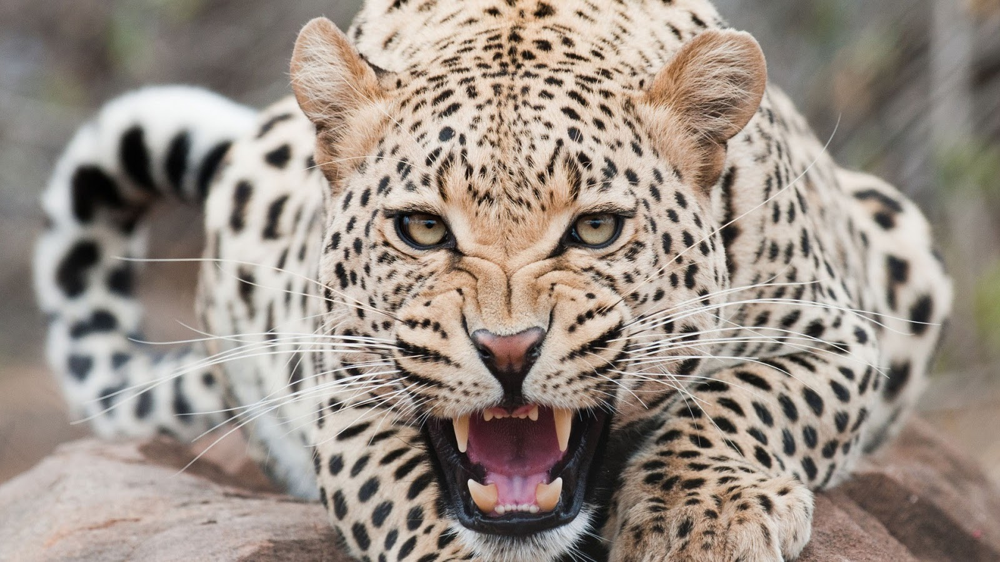

The fastest land animal in the world, the cheetah is a marvel of evolution. The cheetah's slender, long-legged body is built for speed. Cheetahs are tan in color with black spots all over their bodies. They can also be distinguished from other big cats by their smaller size, spotted coats, small heads and ears and distinctive "tear stripes" that stretch from the corner of the eye to the side of the nose.
Historically, Cheetahs were found throughout Africa and Asia from South Africa to India. Now, about 9,000 to 12,000 are confined to parts of eastern, central and southwestern Africa and around 200 reside in Iran.
Found mostly in open and partially open savannah, cheetahs rely on tall grasses for camouflage when hunting. They are diurnal (more active in the day) animals and hunt mostly during the late morning or early evening. Only half of the chases, which last from 20 - 60 seconds, are successful.
Sources:
http://www.defenders.org/cheetah/basic-facts
http://cheetah.org/about-the-cheetah/race-for-survival/